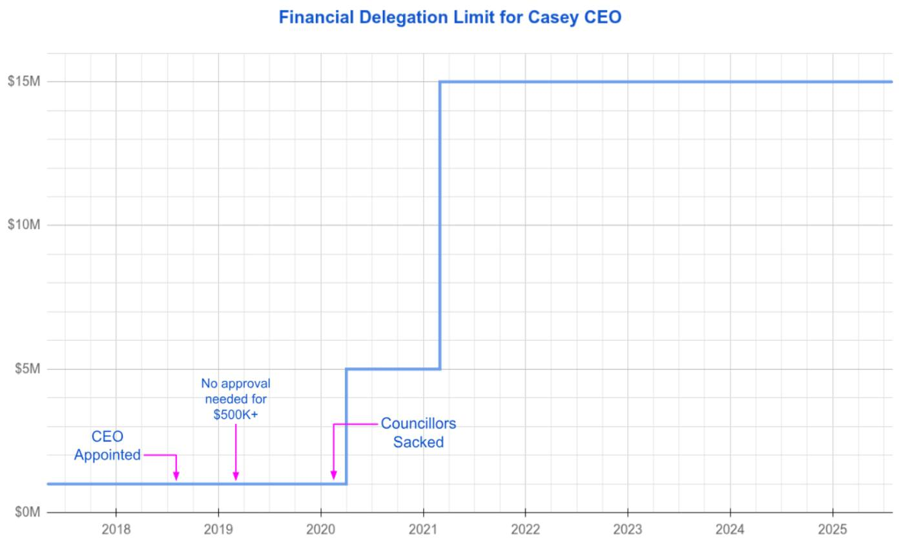
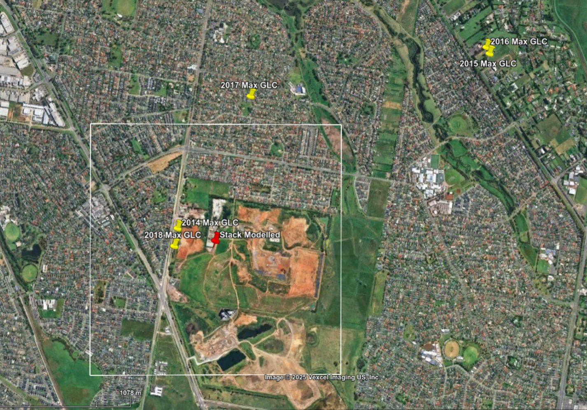
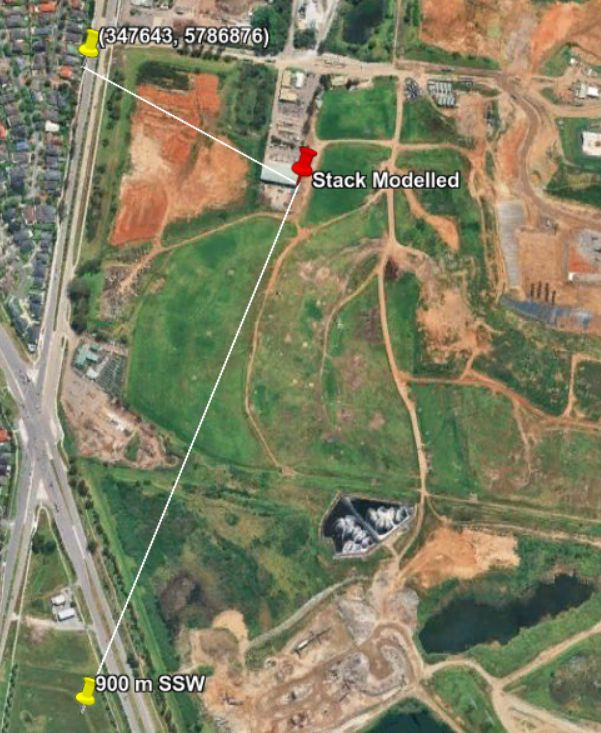

I have produced numerous analyses incorporating statistics and visualisations, including this regression analysis of house prices, in which I use F-statistics and t-statistics to assess the significance of predictors (this was completed as part of my postgraduate studies):
I am also comfortable using geospatial data to produce map-based visualisations, and have done so for multiple projects as listed below.
- Video animations showing the progression of COVID-19 through local government areas (LGAs) in Victoria:
- Exploratory analysis and clustering (machine learning) using ABS data to find new markets for yoga/pilates studios:
- Tableau map showing the bus and rail routes that connect LGAs in Melbourne; to use this, select a pair of LGAs from the drop-down menu to the right of the map:
I have produced several reports and communications involving extensive research on topics I previously knew little about. Notable examples are given below.
- Technical review of a development licence application. The target audience was the EPA. This was produced using LaTeX, and was submitted as a PDF:
- An analysis of COVID-19 in educational settings, comparing Queensland and Victoria. The target audience was academics in computer science, who were not necessarily familiar with public health. This was produced using Python and Jupyter Lab, and was submitted as HTML:
- An analysis of the advantages and disadvantages of political party affiliations in local government. The target audience was everyday people in the City of Casey, many of whom were disengaged from local politics after recent high-profile scandals. I presented this as a series of Facebook posts:
Among the most striking visuals I have produced are the video animations I cited for KSC 1, pertaining to the progression of COVID-19 through Victoria. In addition, I have produced:
- Treemaps in Tableau that show how many journeys are made from one LGA to another. There is one treemap for public transport journeys, and another for private transport journeys. To animate this treemap, use the 'public/private' toggle on the right hand side:
- A step-change graph showing how the CEO delegation limit at the City of Casey has increased dramatically in recent years. This visual was seen by thousands of people, and likely contributed to a subsequent reduction in the delegation limit. This graph is reproduced below:
 XYZI used Python to produce some of the above examples. Links to the code repositories are given below.
I also used Python to collect and parse information on the Victorian government's school capital works program. This analysis showed that the program was heavily skewed; 47 of the 58 selected projects were toilet blocks. The Python script, and its output, are viewable here:
Python scriptI am also comfortable using R for statistical analysis, modelling and visualisation. The real estate analysis I mentioned earlier was completed using R and LaTeX. Another example is a multivariate analysis I completed as part of my postgraduate studies, using R Markdown. I have produced a HTML version on which you can toggle the R code on and off: R Markdown analysis
While I have not used GIS mapping software like ArcGIS, I have used geospatial data with multiple tools to produce analyses and visualisations such as those I cited for KSC 1. I am capable of learning any tool, and often deliberately switch tools to avoid getting too comfortable. If there is a technology or concept I'm uncapable of understanding, I have not yet encountered it.
I recently used Google Earth Pro, a software package I had not used extensively, to explain issues in an odour dispersion model to a nontechnical audience. I am not a dispersion modeller; this example also serves to demonstrate my ability to research concepts outside of my domain of knowledge. The visuals I produced are shown below.
 My Javascript skills need refreshing, but earlier this year I used Javascript to dynamically generate an HTML table from a CSV file. Whenever the CSV file is updated, refreshing the browser will update the webpage, avoiding the need for a backend database. The code repository, and the resulting webpage, are linked below.
Crystal collection websiteIn a previous role, I was part of a software development team working on one project. Each of us was responsible for a separate module; we were required to ensure our own modules worked seamlessly with the others; this required collaboration, as we were sharing a single codebase. At the end of that year, our team won a company award.
As a mathematics teacher at a large school, I collaborated with my colleagues to produce consistent coursework and assessments across multiple class groups. I also shared resources and prepared materials for the benefit of the entire team, even when I was not required to. I enthusiastically took opportunities for collegiate discussion.
More recently, I worked with a team of local advocates who had organised a community forum. We conferred on the content of the presentation, allocated speakers for each part, and discussed what the slides should contain. Soon after this forum, the local council voted in favour of making representations to the state government on the issue.
As a community advocate, there is an expectation that I am knowledgeable about major issues affecting local residents. There is an ever-growing set of important issues, and this has required me to prioritise those that need the most attention. At any one time, I actively work on a few different issues while keeping an eye on major developments in others. For example, in the last few weeks I have actively worked on three issues: a proposed waste facility, a review of the local law, and the renaming of a local landmark.
My written communication skills are second to none. I often adapt my written communications to suit different audiences. I have selected a few notable examples below.
I am also comfortable communicating orally. In addition to the years I spent teaching, I have spoken at a community forum, filmed an interview on a local issue, been interviewed twice for TV news, and made an oral submission to Casey City Council.
- party affiliations series - independence series for alp and liberal - even-handed approach to even difficult issues like race e.g. bruce the ethnic election - ability to engage cordially and respectfully with politicians despite my work - have met with MPs from both major parties to advocate on local issues - have produced fair and factual work despite pressure and attempts at intimidation - part of this is due to the confidence I have that my work is fair and accurate - this allows me to proceed with confidence in the face of pressure to produce - outcomes favourable to particular interests XYZ